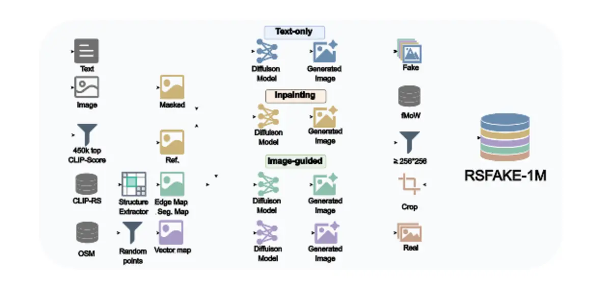
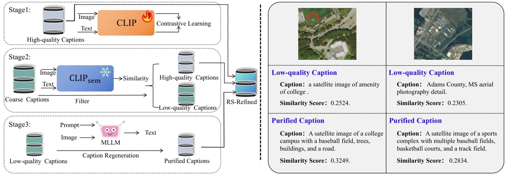

微软亚洲研究院
Web GUI Agent 数据引擎。 我负责网站探索、任务合成、分布式采集和质检，交付约 4.3 万条经验证的交互轨迹，并在 Online-Mind2Web、WebArena 和 WebTailBench 上评测模型。
DeepV. 我开发了从主题或资料生成幻灯片的核心工作流，支持修改大纲、圈选区域精修、跨页编辑，以及按选定版本导出 PPTX。
我在武汉大学遥感信息与工程学院读硕士，师从陈震中教授。我的研究方向包括多模态大语言模型与 Web GUI Agent。在视觉语言模型方面，我做过图像与视频理解、质量评价和 AIGC 检测。最近我对自动算法调优 Agent 感兴趣。
在微软亚洲研究院实习期间，我为纯视觉网页智能体搭建了训练数据引擎，也开发了 DeepV 幻灯片生成智能体的核心工作流。
我预计于 2027 年 6 月毕业，正在寻找 AI Agent 方向的全职研究或研发岗位。 欢迎给我发邮件，聊聊研究想法、合作或工作机会。


给定一段视频，怎样在达到目标画质的前提下尽量降低码率？合适的编码参数取决于画面中的运动和纹理，靠遍历逐组试验很费时。CodecHarness 让 Agent 用不同参数实际编码，根据每次测得的码率和画质决定下一组参数。试验结果也会保存下来，为内容相似的视频提供调参起点。

ACM TIST 第一作者
我们收集了 50 万张真实遥感影像和 50 万张由十种扩散模型生成的伪造影像，用它们检验检测器能否识别不同生成方法留下的痕迹。

CVPR 2026 Highlight 第二作者
当云雾遮住目标时，计数智能体可以借助地图和土地利用信息。我参与构建了包含 1.4 万张图像、120 万个点标注的 GROC 数据集，并参与设计计数智能体的工作流。

IEEE TGRS 2025 第二作者
RS-SQA 在缺少人工标注掩膜的情况下评估遥感图像分割质量。我负责在 1,000 万对遥感图文样本上预训练其中的视觉语言模型 CLIP-RS。
AVQLMM. 结合音频、视频与文本评估视频通话质量，并参与 ITU-T P.UXV 标准研发。
LongCaptioning. 我负责构建 LongCaption-Bench，评测模型为长视频生成详细描述的能力。
Web GUI Agent 数据引擎。 我负责网站探索、任务合成、分布式采集和质检，交付约 4.3 万条经验证的交互轨迹，并在 Online-Mind2Web、WebArena 和 WebTailBench 上评测模型。
DeepV. 我开发了从主题或资料生成幻灯片的核心工作流，支持修改大纲、圈选区域精修、跨页编辑，以及按选定版本导出 PPTX。
遥感信息与工程学院 · 预计 2027 年 6 月毕业
遥感信息与工程学院
第一名 · 团队核心成员
优秀奖 · 第 8 名（共 2,839 名） · 团队核心成员
二等奖 · 团队核心成员